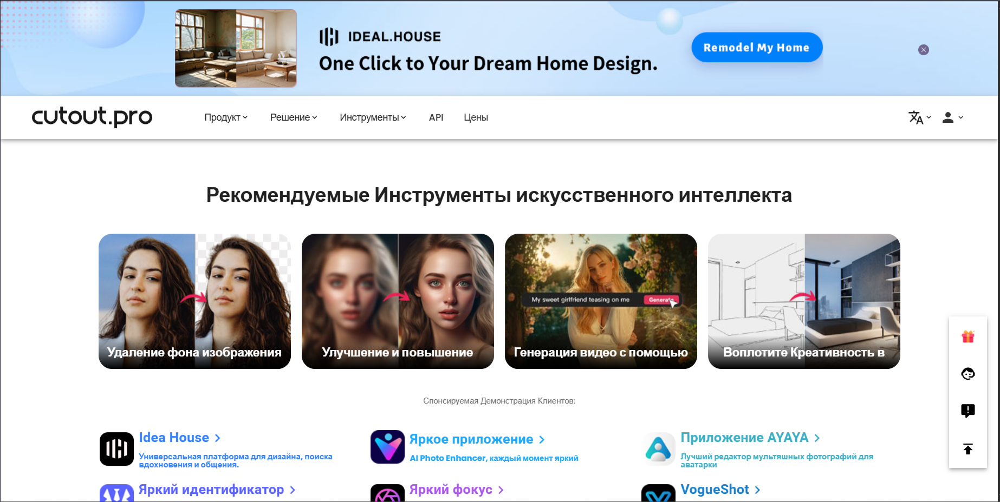

Cutout Pro — это комплексное решение для обработки изображений и видео с помощью искусственного интеллекта. Сервис предлагает широкий набор инструментов для автоматизации рутинных задач дизайнеров, фотографов и маркетологов.
🌟 Основной функционал
Удаление фона
Автоматическое определение и удаление фона с фотографий с сохранением мельчайших деталей объектов. Работает с людьми, животными, предметами и сложными формами.
Обработка видео
Удаление фона с видео в реальном времени, стабилизация изображения, улучшение качества и автоматическое создание анимаций.
Ретушь фото
Автоматическое улучшение портретов: удаление дефектов кожи, коррекция освещения, повышение резкости и цветокоррекция.
🚀 Как использовать Cutout Pro
- Загрузка материала: Перетащите изображение или видео в рабочую область
- Выбор инструмента: Выберите нужную функцию из меню (удаление фона, ретушь и т.д.)
- Автоматическая обработка: ИИ выполнит обработку за несколько секунд
- Ручная коррекция: При необходимости используйте инструменты для точной настройки
- Экспорт: Сохраните результат в нужном формате и качестве
Пример использования:
Исходное изображение
Результат Cutout Pro
На примере видно, как Cutout Pro идеально удалил сложный фон, сохранив детали волос и прозрачность элементов.
💡 Уникальные возможности
Глубокое обучение
Использование передовых алгоритмов машинного обучения для точного определения объектов на изображении.
Быстрая обработка
Оптимизированные алгоритмы обеспечивают обработку изображений за 2-5 секунд.
Доступность в РФ
Сервис полностью доступен для пользователей из России без необходимости использования VPN.
⚙️ Технические характеристики
| Параметр | Значение |
|---|---|
| Поддерживаемые форматы | JPG, PNG, WEBP, MP4, MOV, GIF |
| Максимальный размер файла | 100 МБ (бесплатно) |
| Максимальное разрешение | 4000×4000 пикселей |
| Скорость обработки | 2-10 секунд в зависимости от сложности |
💼 Примеры применения
Для интернет-магазинов
Быстрая подготовка товарных фотографий с чистым белым фоном для каталогов.
Для фотографов
Ретушь портретов, удаление ненужных объектов с фотографий, улучшение качества снимков.
Для видеомейкеров
Создание профессиональных видео с заменой фона, стабилизация дрожащего видео.
Попробуйте Cutout Pro прямо сейчас!
Обрабатывайте фото и видео с помощью передового ИИ
Начать использовать Cutout Pro🔮 Заключение
Cutout Pro — это мощный инструмент для автоматизации обработки изображений и видео. Благодаря передовым алгоритмам искусственного интеллекта, сервис позволяет выполнять сложные задачи за считанные секунды, экономя время и ресурсы специалистов.
Инструмент особенно полезен для дизайнеров, маркетологов, фотографов и всех, кто работает с визуальным контентом. Простота использования в сочетании с профессиональными возможностями делает Cutout Pro незаменимым помощником в цифровом творчестве.